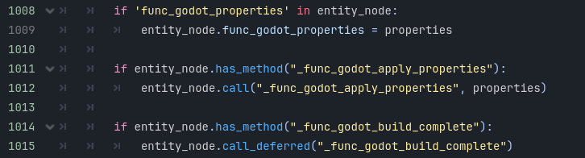

Forge Game Data
FGD stands for "Forge Game Data", leftover from when the Half-Life 2 level editor Hammer used to be the Half-Life 1 editor Worldcraft, and before that when it was a Quake tool called Forge.
FuncGodot utilizes FuncGodotFGD Resources to act as a translation guide for the map build process. These resources are largely separated into two different types: the FuncGodotFGDFile and the FuncGodotFGDEntityClass. Think of the FGD File as a dictionary, and the FGD Entity Classes as the entries.

FGD File Resource
Some of you may only want to build map geometry with some control over collision and occlusion, and prefer to add all of your lights, actors, scripting, etc... in Godot directly. To that end there is a basic default func_godot_fgd.tres included with FuncGodot. You can find it under addons/func_godot/fgd/func_godot_fgd.tres.
This is the default FGD file set in the FuncGodotMapSettings resource. The basic entity definitions included with it are Worldspawn, func_geo, func_detail, func_detail_illusionary, func_illusionary, and Phong. We'll go over what each of these entity types are a little farther below.
But what if you want to add your own custom entity types? It's always best practice to create your own FGD File resource and NEVER a good idea to just modify the pre-existing default FGD File. Any time FuncGodot is updated, it will overwrite the func_godot_fgd.tres that comes with it and erase any changes you've made to that resource. While the goal is to keep the default FGD File as basic as possible, we cannot guarantee it won't be changed at some point in the future.
That said, it is possible to include the default FuncGodot FGD File into your own as a Base FGD. Create a new FuncGodotFGDFile resource and examine it in the inspector.
The Export File property does exactly what you might think: it generates and saves your FGD file to the Map Editor Game Config Folder set by the FuncGodot Local Config. Use this whenever you need to update your FGD.
The next property, Target Map Editor, is intended to help with specific key words that aren't shared across the different map editors. Point class entities in map editors can have display models assigned to them according to their FGD definitions. Most map editors seem to use the "studio" key word to define the model path, but TrenchBroom instead optionally allows the "model" key word while also including additional display options and expressions. When set to false, FuncGodot will omit entity definition meta properties using the "model" key word in order to prevent errors in your chosen map editor. When exporting the FGD File through a TrenchBroom Game Config resource the setting will be overridden to true. See the Valve Developer Wiki for more information.
Fgd Name should be self evident: this will be your exported FGD's filename, minus the file extension. Best practice would be to set this to either your game's name or its acronym.
Base Fgd Files is an array of FuncGodotFGDFile resources that will be prepended to our final FGD file output. It is not necessary to export these base FGD Files; only the
FGD File they are added to needs to be exported and the rest will be built by and merged into what you could consider your "Master FGD File".
NOTE: This is not where you would put your FuncGodotFGDBaseClass resources! Those are not the same as FuncGodotFGDFile resources and are considered entities! More information on FuncGodotFGDBaseClass found below.
To add the func_godot_fgd.tres as a base FGD file to your custom FGD file, all you need to do is locate func_godot_fgd.tres and drag and drop it onto the Base Fgd Files array in the inspector.

The last property is Entity Definitions. This is where you'll drop all of your custom entity resources to be built or instanced by FuncGodot. Let's take a look at what a populated one looks like by viewing the default func_godot_fgd.tres in the inspector.
Entity Class Definitions
In terms of how to map with the Quake Map File > FuncGodot > Godot pipeline, it's best to think of the entities in Quake design terms. That is to say, everything is an entity: the player, the enemies, the ambient sounds, the doors, the lifts, the trigger volumes, the map geometry itself... all of these should be thought of as entities.
All map editors and FuncGodot support at least 2 different kinds of entities: Solid (Brush) Entities and Point Entities. Using FuncGodotFGDSolidClass and FuncGodotFGDPointClass resources, you can generate any type of Godot node and apply any script to it.
Every entity is comprised of 2 things: Metadata and Key Value Pairs.
Metadata tells the map editor how to display your entity, things like bounding box color or display models for Point Entities, but have no effect in Godot.
Key Value Pairs on the other hand can be thought of as your entity's properties. In a map file, all entities are comprised of Key Value Pairs. Each entity will always have a classname; this classname is what FuncGodot uses to determine what node or packed scene is generated and how upon building the FuncGodotMap.
The FuncGodotMap attempts to call two methods on each entity at the end of the build process. As an added advantage of using these calls, you can guarantee that all FuncGodotMap generated nodes now exist and can reference each other.
Modifying Entities on Map Build

If you decide you want to make modifications to your generated entities on map build using any of the following methods, you'll need to make sure that your entity's
script is set as a @tool script.
The first method call is to _func_godot_apply_properties(entity_properties: Dictionary). Because _func_godot_apply_properties passes the entity properties
in the function, you do not need to declare a func_godot_properties dictionary in your node script; instead, just apply your properties as needed in this callback.
After every entity has called _func_godot_apply_properties, FuncGodot will cycle through all of them again and attempt to call _func_godot_build_complete()
as a deferred call. Since we're calling this method deferred after every entity has already called the previous method, we can guarantee any nodes generated by our entities
in _func_godot_apply_properties can be referenced during _func_godot_build_complete.
Additionally upon building, all of the entity's key value pairs will be added to the generated node's func_godot_properties Dictionary
(provided that the property is set as an exported variant).
We'll examine this FuncGeo class as a demonstration of the relationships between the FuncGodotFGDBaseClass, the FuncGodotFGDSolidClass, the func_geo brush entity in the map editor, and the final generated Godot FuncGeo StaticBody3D node.
The image on the left depicts a Base Class resource that contains other base classes to accumulate Class Properties. The image on the right is a Solid Class resource containing that Base Class and defines our FuncGeo entity.


This is our FuncGeo entity's properties as they appear in TrenchBroom.

The generated FuncGeo node's properties in the inspector. See how our Func Godot Properties Dictionary matches our Class Properties from our map editor.

With FuncGodot, your entity does not necessarily need a tool script. And even if you provide it a tool script, it does not need a func_godot_properties dictionary.
FuncGodot will still generate and instantiate these entities without providing any properties.
However, to take full advantage of FuncGodot's power it is highly recommended that you provide your nodes with both.
See the chapters on FuncGodotFGDEntityClass resources and Entity Key Value Pairs for more information.
Default Entities
All default FuncGodot entities, except for Phong, are FuncGodotFGDSolidClass entities. All of the SolidClass entities are very similar, mostly differing in occlusion and collision.
-
Phong : A FuncGodotFGDBaseClass that provides _phong and _phong_angle properties to most of the entities below.
See the Wikipedia article on Phong Shading for quick primer.
-
worldspawn : A geometry class that mimics the Worldspawn entity found in Quake and Half-Life. In the FuncGodot implementation, Worldspawn generates a single StaticBody3D
with a child MeshInstance3D and multiple convex CollisionShape3D
children. It also generates an OccluderInstance3D with an ArrayOccluder3D.
Under normal circumstances, there can only ever be one Worldspawn entity in a map file. While there technically are ways to create multiple Worldspawn entities this manual will not explore that possibility. - func_geo : Identical to Worldspawn, with the exception being that you can (and should) create multiple func_geos. See Why Not Worldspawn? for more information.
- func_detail : Almost identical to func_geo, with the exception that they do not generate OccluderInstance3D children.
- func_illusionary : Geometry that has no collision. It generates a Node3D, a MeshInstance3D child, and an OccluderInstance3D child.
- func_detail_illusionary : Identical to func_illusionary, except that it does not generate an OccluderInstance3D child.
NOTE: Some map editors are strict about entity definition order! To stay safe, make sure that any entity classes that inherit from a base class come after that base class. This includes other base classes! Otherwise you may run into issues where properties are not properly inherited.